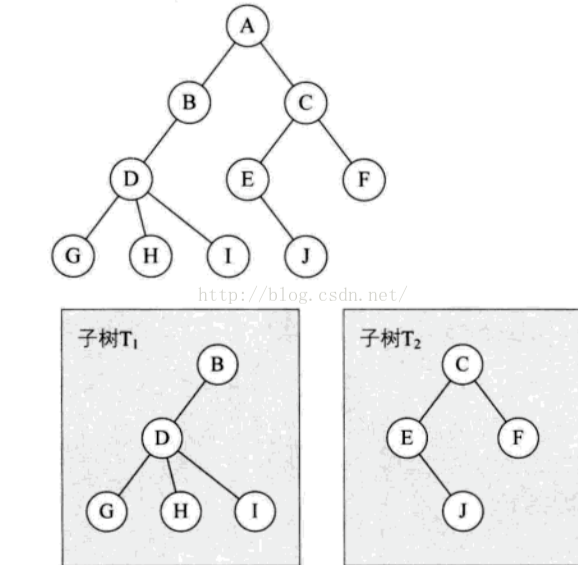

树
定义
树是非线性数据结构，常见的用处比如磁盘驱动器的文件系统。
树是n (n ≥ 0) 个结点的有限集。当n = 0时，成为空树。非空树满足以下条件：
1.有且仅有一个根结点；
2.当 n > 1时，其余结点可分为m(m > 0)个互不相交的有限集T1, T2, Tm,其中每个集合本身又是一棵树，称为根的子树。

树有以下特点：
1.树的根结点没有前驱，除根结点外所有结点有且只有一个前驱；
2.树中的所有结点都可以有零个或多个后继；
因此可以得出n个结点的树有n-1条边；
基本术语
结点（Node）： 树的基本组成单位，每个结点包含一个值，并可以连接到其他结点。根结点（Root Node）： 树的顶部结点，没有父结点。叶结点（Leaf Node）： 没有子结点的结点。结点关系： 结点的子树为孩子（Child）,该结点为双亲（Parent），同一个双亲的孩子叫互为兄弟（Sibbling）。从根到该结点的分支上的所有结点都叫祖先。以某结点为根的子树的结点为子孙层次（Level）： 根结点为第一层，子节点为第二层。以此类推。双亲在同一层的结点为堂兄弟。深度（Depth）： 从根结点到某个结点的路径长度。高度（Height）： 从叶节点到某个结点的路径长度。度（Degree）： 结点拥有的子树数。度为0的结点为叶结点（终端结点），大于0的叫分支结点（非终端结点）。树的度是树内结点的度的最大值。有序树和无序树： 树中结点的各子树看成从左至右是有次序的，不能互换的，则为有序树，否则为无序树。森林（Forest）： 是m (m ≥ 0)棵不相交的树的集合。把根结点删除树就成了森林，把森林的各子树上加一个结点，将所有树连接到这个新结点上，森林就变成了树。一棵树也是森林。